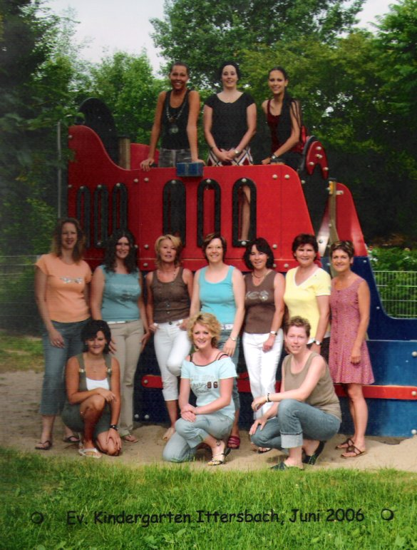

Kindergarten IttersbachTräger: Evangelische KirchengemeindeRita Lebherz, Kindergartenleitung Belchenstraße, 76307 Karlsbad Telefon: 07248/1443, Montag bis Freitag 8:00 bis 13:00 Uhr Fax: 07248/ 924349 E-Mail: kindergarten@kirche-ittersbach.de |
DownloadsEltern-Kurzinfo |
...im evangelischen Kindergarten Ittersbach. Wir möchten ihnen
unsere Einrichtung vorstellen. Der Kindergarten besteht aus fünf altersgemischten
Gruppen. Wir betreuen Kinder im Alter von 2 Jahren bis zum Schuleintritt.
Die Kinder erleben bei uns Wertschätzung und Akzeptanz in ihrer Person,
ganzheitliche und entwicklungsangemessene Begleitung in allen Bereichen.
Wir arbeiten gruppenübergreifend, dennoch hat jedes Kind seine Stammgruppe.
Besondere Angebote
|
Blick auf die Gartenanlage |
| Sonnengruppe | Patricia Bühn, Christina Ungermann, Tatjana Hagen |
| Hasengruppe | Melanie Göhring, Gatha Leibl |
| Marienkäfergruppe | Kathi Draser, Iris Schenk, Sabrina Vogel |
| Mäusegruppe | Julia Merkle, Elke Gauß |
| Igelgruppe | Lore Pleninger, Manuela Pfleger |
| Kiga.-Leitung | Rita Lebherz |

Wir wollen Familien möglichst flexible, auf ihre jeweiligen Bedürfnisse abgestimmte Betreuungszeiten bieten.
Beachten Sie bitte besonders unsere Angebote zur flexiblen Ganztagsbetreuung und die Inseltage!
Regelgruppe (RG) |
||
Wochentag |
Öffnungszeit |
Mittagessen |
| Montags bis Freitags | 8:00 Uhr bis 12:30 Uhr | nein |
| Dienstag bis Donnerstag | 13:45 bis 16:15 Uhr | nein |
Verlängerte Öffnungszeit (VÖ) |
||
Wochentag |
Öffnungszeit |
Mittagessen |
| Montags bis Freitags | 7:30 bis 14:00 Uhr | bei Bedarf |
Ganztagsbetreuung, flexibel (GTf) |
||
Wochentag |
Öffnungszeit |
Mittagessen |
| 2 Tage | 7:00 Uhr bis 17:00 Uhr | ja |
| 3 Tage | 7:30 Uhr bis 14:00 Uhr | bei Bedarf |
Ganztagsbetreuung (GT) |
||
Wochentag |
Öffnungszeit |
Mittagessen |
| Montags bis Freitags | 7:00 Uhr bis 17:00 Uhr | ja |
Inseltage |
||
Wochentag |
Öffnungszeit |
Mittagessen |
| einzelne Tage | 7:00 Uhr bis 17:00 Uhr | ja |
Betreuungsangebot |
1. Kind |
2. Kind |
3. Kind |
Kind unter 3 Jahre |
| Regelgruppe (RG) | 77,00 € | 38,50 € | 0 € | 86,50 € |
| Verlängerte Öffnungszeit (VÖ) | 84,00 € | 43,00 € | 0 € | 126,00 € |
| Ganztagsbetreuung, flexibel (GTf) | 113,00 € | 56,50 € | 0 € | 169,50 € |
| Ganztagsbetreuung (GT) | 174,50 € | 87,50 € | 0 € | -- | Inseltag (1 x GT) | 5,00 € | 5,00 € | 5,00 € | 5,00 € |
| Essensgeld | 2,50 € pro Essen | |||